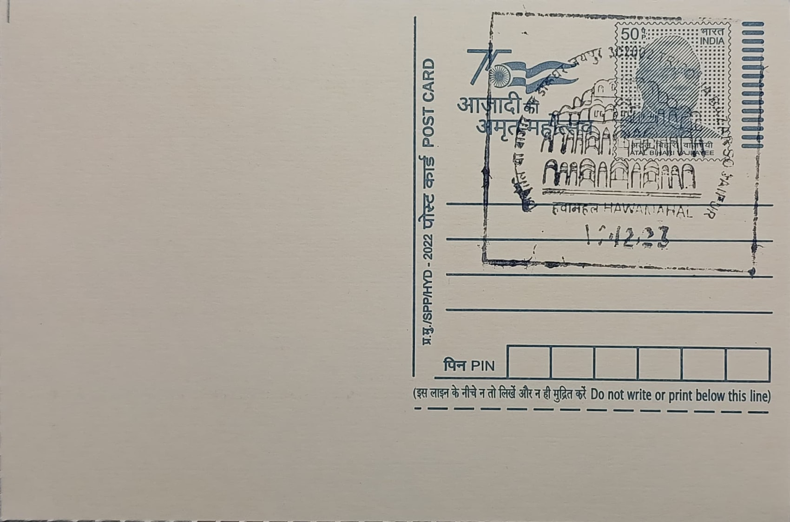

Hawa Mahal
हवा महल


The name Hawa Mahal, literally the 'Palace of Winds,' derives directly from the structure's most distinctive functional trait: its lattice of 953 small carved sandstone windows, or jharokhas, which draw in and channel air through the honeycomb facade to cool the rooms behind even in Jaipur's harsh summer heat. Commissioned in 1799 by Maharaja Sawai Pratap Singh, a devout follower of Lord Krishna and grandson of the city's founder, Sawai Jai Singh II, the palace's pyramidal, tiered silhouette was deliberately modelled on the crown of Krishna, giving the building a devotional dimension beyond its practical role as a screen for the royal women's quarters, or zenana.
Hawa Mahal belongs to the category of royal Rajput palace architecture and is among the most recognisable heritage monuments of Rajasthan, forming part of the wider City Palace complex of Jaipur. Its significance rests less on scale than on ingenuity: the five-storey facade allowed women of the royal household, bound by strict purdah customs, to observe street festivals, royal processions, and everyday bazaar life on the road below without themselves being seen from outside. As a protected monument it is maintained by the Rajasthan state archaeology department, and it is counted, together with Jaipur's other Jai Singh-era landmarks, among the elements that contributed to the city's UNESCO World Heritage inscription in 2019.
The palace was designed by the architect Lal Chand Ustad in a blend of Hindu Rajput and Islamic Mughal idioms, visible in its fluted pillars, floral carving, and domed chhatris alongside Mughal-style arches and stone inlay work. Rising roughly 15 metres (about 50 feet), the building is not a freestanding palace but a thin, single-room-deep screen wall rising behind the City Palace, with its upper floors, Vichitra Mandir, Prakash Mandir, and Hawa Mandir, reached only through corridors and ramps from the adjoining zenana rather than by any grand internal staircase. The five storeys are popularly linked to the five elements of Hindu cosmology, earth, water, fire, air, and sky, reinforcing the building's symbolic as well as functional design.
A defining feature of the interior is the top-floor Vichitra Mandir, where Maharaja Pratap Singh is said to have worshipped Krishna and composed devotional verse, giving the palace's uppermost, most exposed chamber a contemplative rather than purely ornamental purpose. The building's pink and red sandstone, quarried locally and matching the rest of the walled Pink City, was originally chosen to echo Mughal royal hospitality colours, reinforced when the city was painted pink in 1876 to welcome the Prince of Wales. Structurally, the absence of any rear wall or supporting depth behind the jharokhas means the palace's famous facade is essentially self-supporting screen masonry, an unusual engineering choice that has nonetheless withstood more than two centuries of exposure to Jaipur's climate.
The site today houses a small archaeology museum displaying Rajasthani miniature paintings and artefacts, and it underwent a significant renovation beginning in 2006, the first major restoration in about fifty years, at a cost of roughly Rs 4.5 million, focused on cleaning the latticework and sandstone facade of accumulated grime and pollution damage; a further lime-plaster facelift followed in 2021-22 under state oversight. Access for visitors is now channelled entirely through the City Palace side rather than the Hawa Mahal's original street-facing entrance, and the monument draws large numbers of tourists daily as one of Jaipur's most photographed sites, its maintenance resting jointly with the state archaeology department and the Jaipur civic authorities responsible for the surrounding walled city.
| Date of Introduction | September 27, 2005 |
|---|---|
| Address | Sub Postmaster, |
| Tripolia Bazaar SO, | |
| Jaipur (dt.), Rajasthan - 302002. |